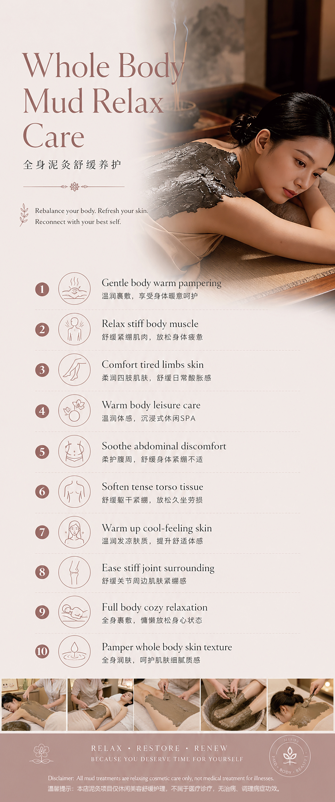

Treatments
Body Mud Therapy
Whole body warm mud therapy to deeply relax stiff muscles, comfort tired limbs, detoxify the skin, and restore complete body vitality — from the first session.
About the Treatment
Ancient Healing. Modern Comfort.
Mud therapy — known across Asian wellness traditions as one of the most powerful full-body restorative treatments — works through a unique combination of mineral-rich earth, sustained warmth, and the gentle pressure of a full body wrap. Together these elements produce effects that go far beyond ordinary massage or body treatments.
Our therapeutic mud is sourced for its high mineral content — rich in magnesium, calcium, iron, and silica — minerals that are absorbed transdermally through the skin during the warm wrap phase. The heat from the mud penetrates deeply into the muscle tissue, releasing chronic tightness that surface massage cannot reach. The result is a profound physical unwinding felt throughout the entire body.
Regular Body Mud Therapy sessions reduce accumulated muscle tension, improve joint mobility, support the lymphatic system's detoxification processes, condition the skin, and restore a sense of full-body lightness and vitality that clients describe as unlike anything else they have experienced.
- Chronic muscle tightness and body tension
- Aching, tired, or heavy limbs
- Poor circulation and fluid retention
- Dry, rough, or dull body skin
- General fatigue and low body vitality
- Stress-related physical tension

Treatment Benefits
What You Can Expect
Full-body relief, restored vitality, and skin that feels as renewed as the rest of you.
Deep Muscle Relaxation
The sustained, penetrating warmth of the therapeutic mud reaches muscle layers that hands alone cannot access — releasing deep-seated chronic tension in the back, legs, shoulders, and hips. Many clients describe it as the most complete muscular release they have ever experienced.
Full Body Detoxification
Warmth promotes perspiration that carries waste products and excess fluids out of the tissue. Simultaneously, skin-purifying minerals from the mud draw impurities from the pores — leaving skin cleaner, clearer, and more radiant across the entire body.
Improved Circulation
The heat and mineral action dilate blood vessels and stimulate lymphatic flow throughout the body — reducing fluid retention, easing heaviness in the legs and feet, and delivering fresh, oxygen-rich blood to fatigued tissue.
Skin Conditioning
Mineral-rich mud is a natural skin conditioner — it gently exfoliates dead cells, nourishes the skin with trace elements, and leaves the entire body feeling exceptionally smooth, soft, and renewed.
Joint Comfort
The warmth and mineral content of therapeutic mud has a long history of use for joint comfort — easing stiffness, improving mobility, and reducing the discomfort associated with overuse, physical labour, or extended periods of sitting.
Restored Vitality
Clients consistently leave Body Mud Therapy sessions feeling lighter, calmer, and more energised — a combination of physical release, improved circulation, and the deeply restorative effect of sustained therapeutic warmth on the nervous system.
The Process
How It Works
A complete body restoration ritual — from preparation and mud application to massage and finishing care.
-
01
Consultation & Body Assessment
Your therapist begins by understanding your primary concerns — whether that is chronic muscle tension, poor circulation, skin condition, fatigue, or general recovery. Any areas of particular tightness or discomfort are noted and will receive additional attention. Medical conditions or contraindications to heat therapy are also discussed at this stage.
-
02
Body Exfoliation Preparation
A full-body dry brush or gentle scrub exfoliation removes the surface layer of dead skin cells, opens the pores, and prepares the skin to absorb the therapeutic minerals from the mud most effectively. This step also stimulates circulation in preparation for the warming phase.
-
03
Warm Mud Application & Wrap
Mineral-rich therapeutic mud, warmed to the optimal therapeutic temperature, is applied generously across the entire body. You are then wrapped in a thermal blanket to maintain the heat and allow the mud's minerals, warmth, and detoxifying properties to work deeply into the skin and muscle tissue over 20–30 minutes.
-
04
Rinse, Massage & Body Finishing
The mud is removed with a warm rinse, and a targeted body massage is performed to further release any remaining tension and help the body fully integrate the effects of the heat and mineral therapy. A nourishing body butter or oil is applied to seal moisture into the freshly conditioned skin — leaving the body completely smooth, deeply relaxed, and fully renewed.
Your Questions Answered
Frequently Asked Questions
-
For general wellness and muscle recovery, once every two to four weeks is ideal. Those with chronic tension or active recovery needs may benefit from weekly sessions initially. A course of 4–6 consecutive sessions is often recommended for clients seeking progressive improvement in muscle condition, circulation, or skin quality — with monthly maintenance sessions thereafter.
-
Body Mud Therapy is generally safe and beneficial for most adults. However, it is not recommended for those who are pregnant, have uncontrolled high blood pressure, active skin infections, open wounds, or conditions that make heat therapy inadvisable. Please disclose your full health history during your consultation so we can ensure the treatment is appropriate for you.
-
Drink plenty of water before your session to support the detoxification process and help you tolerate the heat comfortably. Avoid heavy meals in the two hours before your appointment. After your session, continue drinking water to support the lymphatic and detox processes that continue post-treatment. Avoid strenuous exercise for the remainder of the day — allow the relaxation to be fully absorbed.
-
A full Body Mud Therapy session is 90 minutes, which includes the consultation, exfoliation preparation, mud application and wrap, rinse, massage, and finishing care. Sessions are by appointment only — please book in advance to secure your preferred time.